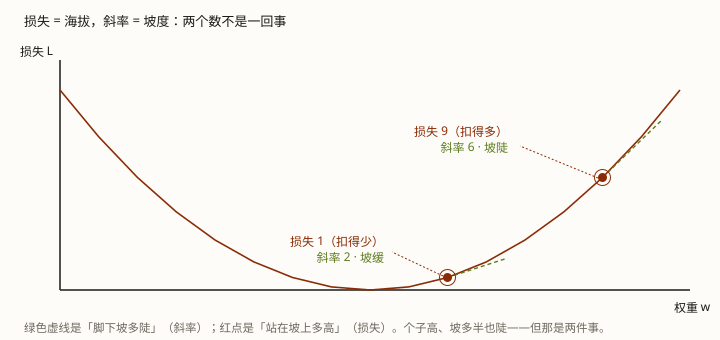

这篇把训练「拧」那一格背后的数学摊开：先用数学语言把整个过程走一遍，再一格一格拆开讲。扣分是一个数，斜率是另一个数，扣几分并不直接决定拧多少。读第 0 课或第 9 课卡住时，回来对这里。
第 0 课说「算扣分 → 往少扣分的方向拧一点点」，你自然会接着问：扣几分，是不是就拧多少？扣 8 分比扣 2 分拧得狠？扣分到底拿来干嘛？
拆穿：扣几分不直接决定拧多少。真正决定拧多少的是另一个数——斜率（权重动一点、损失跟着动多少）。扣分只是「现在站在坡上多高」，拧多少看的是「脚下坡多陡」。扣 8 分的那个点，可能比扣 2 分的还拧得少。
读完这篇，你能把整个训练过程用数学语言说清，并把「损失」「斜率」「反向传播」三件事分清楚。
训练每拧一次，靠的是两个数、一个公式：损失（现在多高）、斜率（坡多陡），以及把两者连起来的损失函数。
拧多少 = 斜率 × 学习率——扣分（损失值）本身不进这个算式。
第 0 课把训练讲成四步——出题、作答、算扣分、拧，那是为了好懂的白话版。它对应的数学过程长什么样？
其实还是同一件事，只是换成公式和数字的说法：先定一条「权重 → 扣分」的公式（损失函数），然后每一轮把当前权重代进去算扣分、求导算斜率、照斜率换新权重，重复几百亿次。下面把它写成清楚的三步。
先定损失函数。它是一条公式，回答「给定权重 w，扣多少分」，写作 L = f(w)。比如：
L = f(w) = w² （最简单的一条；预训练真实用的是 −log(答案那个字的百分比)）
然后每一轮循环这三步：
重复几百亿次：
① 前向： 把当前 w 代进损失函数 f，算出扣分 L # L 就是「损失值」
② 反向： 对 f 求导，算出每个权重的斜率 dL/dw # 每个权重各一个
③ 更新： 每个 w = w − 学习率 × 斜率 # 换成新值，这就是「拧」就是这三步，转几百亿圈。每一步干什么，后面一节一节拆——但先记住一件事：第①步的扣分（损失值）是「现在多高」，第②步的斜率是「坡多陡」，第③步拧多少用的是斜率、不是扣分。扣分和斜率都是损失函数 f 算出来的（一个取值、一个求导），但更新只用斜率。
下面从「这条公式是什么」开始，一格一格拆开。
训练里有两个「数」，先把它们摆开：
w。把这两个数连起来的，就是损失函数（第 1 节那条 L = w²）。代进 w = 2，扣分就是 2² = 4。这一条公式，就是「权重」和「扣分」之间的因果关系。
求「斜率」，得对这条公式求，不是对两个具体的值求。光知道「权重=2、扣分=4」这两个孤零零的数，算不出斜率——因为斜率问的是「如果 w 动一点点，L 会变成多少」，而那两个值只说了「现在是多少」，没说「动了之后会怎样」。要知道动了会怎样，得有那条公式。就像知道「车在 2 米处、耗油 4 升」，算不出「再开 1 米油耗多少」——得先知道油耗和路程的关系式。
斜率（学名叫导数）就是这个问题的答案：权重 w 动一点点，扣分 L 跟着动多少、往哪边动。
拿到公式，斜率算得出来。对 L = w² 求一次，得到斜率公式：
dL/dw = 2w （这一步叫求导）
别被记号唬住。dL/dw 读作「L 对 w 的斜率」，就是「w 每加 1，L 加多少」这个比值。代进 w = 2，斜率 = 2×2 = 4，意思是：在这个点上，w 每增大 1，扣分就增大 4；w 增大 0.01，扣分就增大约 0.04。
斜率身上带着两样东西：
w 会让扣分变大，那就该往小调；斜率为负，反过来该往大调。「往少扣分的方向拧」，说的就是顺着这个符号反着走。
这是最容易卡住的一处，值得单独说清。
还是 L = w²、斜率公式 dL/dw = 2w。取 w = 2：
2² = 4——这是「扣 4 分」，是站在坡上多高。2×2 = 4——这是「w 动一点、L 动多快」，是脚下坡多陡。两个 4 纯属巧合，是完全不同的两个东西。换个点就分开了：取 w = 3，扣分 = 3² = 9，斜率 = 2×3 = 6——一个 9、一个 6，谁也不是谁。
所以「代进 w=2 算出 4」，得看清楚算的是哪个 4：代进损失公式 L=w² 得到的是扣分 4；代进斜率公式 2w 得到的是斜率 4。求导的对象是「公式」，求出斜率公式之后，再把权重的当前值代进去。「对权重=2 求导」这句话是不完整的——完整说法是「对 L=f(w) 这条公式求导得到 f′(w)，再把 w=2 代进 f′(w)」。
知道斜率后，「拧」就剩一行算术（第 1 节的第③步）：
新权重 = 旧权重 − 学习率 × 斜率
拆开看这三个量各自决定什么：
−：「朝着损失变小」的全部保证就在这。斜率的定义是「w 加 1、L 加多少」——它指着上坡（损失变大）那一边。减号让你反着上坡走 = 下坡（损失变小）：斜率为正（上坡朝 w 大）就减 w，斜率为负（上坡朝 w 小）就加 w。无论在哪一侧，减号都自动往「损失更小」的方向挪。拿数字走一遍（L=w²、w=2、学习率 0.1）：前向扣分 2²=4、反向斜率 2×2=4、更新 w = 2 − 0.1×4 = 1.6——w 就从 2 换成 1.6。下一轮从 1.6 再来：扣分 1.6²=2.56（从 4 掉下来了）、斜率 3.2、更新成 1.28。每一轮就做一次「减去 学习率×斜率」，w 换个新值，扣分一路往下掉。真实模型是对几十亿个权重各做一次这行算术、一起更新——「调整」落到实处就是把内存里那个数用新值覆盖掉。
看 L=w² 的两侧，就懂「为什么是朝着目标」：谷底在 w=0。右侧 w=2、斜率 +4（上坡朝右）→ 减号往左拧，w: 2→1.6→…→0；左侧 w=−3、斜率 −6（上坡朝左）→ 减号往右拧，w: −3→−2.4→…→0。两侧都朝谷底走、损失一路降——「朝着目标」不是顺其自然，是减号刻意让每一步都往「局部损失更小」的方向挪一点点。
所以回到开头那个问题：扣 2 分还是扣 8 分，不会让拧的幅度变大或变小。拧多少由「斜率 × 学习率」决定。真正会被 RL 影响的也不是「8 分」这个数本身——第 9 课讲过，RL 会先把整段的分减组内均值、除组内标准差，变成一个方向量再拿去算，那个「8 分」在进反向传播之前就被换算过了。
那「扣分多就拧得多」这句话是错的吗？不算错，但它是个经验观察，不是机制。扣分多的地方，通常离目标也远、坡也陡，所以斜率大、拧得多——是斜率在拧，不是那个扣分数在拧。机制上精确的说法是：拧多少 = 斜率 × 学习率。两句话并不矛盾，只是分属「经验层」和「算式层」。
既然拧多少看斜率、不看扣分数，那每轮算出的扣分拿来干嘛？先把名字钉死：扣分就是损失值——扣分是白话、损失（loss）是术语，同一个数。
它有三个作用，都不是「决定拧多少」：
最小的例子看清「反向要用前向的中间量」：a = w×x、L = a²。取 w=1、x=3——前向算出中间量 a=3、扣分 L=9；反向算斜率 dL/dw = (2a)×x = (2×3)×3 = 18。斜率 18 里的 a=3，是前向算出来的：扣分 9 不进更新，但前向那趟算出的 a，是反向的原料。
所以「斜率和扣分没有关系」这句话，准确说法是「拧多少不看扣分数」（扣分的数值不进更新算式），但不是毫无关系——它俩是同一个损失函数生的两个量：扣分是「高度」，斜率是「坡度」，更新用坡度不用高度。把「扣 8 分会不会比扣 2 分拧得狠」记成「高度不决定步子，坡度才决定」，就不会再绕回去。
反向传播传的不是「扣几分」，是「每个权重各自的斜率」。它就是第 1 节三步里的第②步。
真实模型的扣分是几十层套娃算出来的：L = f(……f(输入 × w₁ + ……))。要对这么一长串里的每一个 w 求斜率，办法是从出口往回一层层追：先算扣分对最后一层的斜率，再让它乘上「最后一层对倒数第二层」的斜率……一路传回每个权重。这套从后往前的算法就是反向传播（第 0 课那句「算账是从后往前」说的就是它）。
这里分清公式和值，就能解开一个常见误会：
2w）：由损失函数求导一次定下来，不依赖当前权重，是固定的。w=2 时的 4）：把当前权重代进斜率公式算出来的数，每一轮权重变了它就变，所以每轮都要重算一遍。反向传播干的是后者：每一轮把当前的权重代进去，算出这一刻每个权重该往哪拧、拧多少的具体数字。第 0 课那句「这次没拿满分，是哪些数字造成的？一次算出几十亿个数字各自该往哪边拧」，说的就是这件事——那个「该往哪边拧」的方向，就是每个权重的斜率。
有人会问：既然导数描述的是「变化」，那不拿新值减旧值，怎么知道变化了多少？——这里分两个时刻，别揉在一起：
新权重 = 旧权重 − 学习率 × 斜率 里，没有任何减法是在「求变化」。所以「导数算出来是绝对值、还要再换算成相对值」这个印象是反的：导数一生下来就是变化率（相对量），它自己就是你要的那个东西，不需要再做「绝对到相对」的转换。
把这套数学放回第 9 课，就会发现预训练和后训练的「拧」是同一个机制，变的只有扣分单：
所以你最初的判断是对的：所有后训练方法都一样「算一个 loss、反向传播、每个权重调大调小」。要补的只是两句——扣分的算法（扣分单）各家不同；拧多少看的是斜率，不是扣分数。
脚本在工作区：exercises/llm/appendix-training-math.py。它用最朴素的 L = w² 当损失函数，把「扣分」「斜率」「这一步拧多少」三个数摆在同一行，直接看清它们各算各的。
python exercises/llm/appendix-training-math.pyWindows 终端若中文乱码，先执行 chcp 65001。下面是输出摘录：
======================================================================
[1] 损失值和斜率是两个不同的数——代入 w 各算各的
======================================================================
损失公式 L = w^2，导数公式 dL/dw = 2w。
取 w = 2.0:
损失值 L(2) = 2^2 = 4 <- 这是「扣多少分」
斜率 dL/dw = 2*2 = 4 <- 这是「w 动一点，L 动多快」
!! 两个数都是 4，纯属巧合——换个点就分开了：
w = 1.0: 损失 L = 1 但 斜率 dL/dw = 2
w = 3.0: 损失 L = 9 但 斜率 dL/dw = 6
======================================================================
[2] 扣分大不大，不直接决定拧多少——是「斜率 * 学习率」在决定
======================================================================
挑两个不同的权重（一个扣分大、一个扣分小）比一比：
w= +3.0 损失 L=w^2= 9.0 斜率 dL/dw=2w= +6.0 一步实拧 LR*s=0.1*+6.0 = +0.60
w= +1.0 损失 L=w^2= 1.0 斜率 dL/dw=2w= +2.0 一步实拧 LR*s=0.1*+2.0 = +0.20
w=3 那边损失 9（扣得多）、w=1 那边损失 1（扣得少）。
「扣得多的那一侧斜率也大」，所以通常拧得多——但那是斜率的功劳，
不是那个「9」和「1」进了算式。算式里根本没有损失值。输出里两处要看懂：[1] 那两个「都是 4」是巧合，换 w=3 就分成扣分 9、斜率 6 两个数；[2] 那两行里，拧多少那栏（0.60 / 0.20）是从斜率算出来的，不是从扣分（9 / 1）算出来的。
Q1 训练时每轮算出的「扣分」（损失值），直接决定了「这一步拧多少」吗？
Q2 损失函数 L=w²，斜率公式是 dL/dw=2w。取 w=3 时，扣分和斜率各是多少？
Q3 反向传播从出口往回算，算出来交给每个权重的是什么？
Q4 「扣分多就拧得多」和「拧多少跟扣分值无关」这两句，是什么关系？
Q5 既然拧多少看斜率、不看扣分数，那每轮算出的扣分（损失值）是拿来干嘛的？
把「从出口往回追责」写成能读完的代码，这两份最合适：
前置：LLM 底层 · 第 0 课 · 模型是怎么学出来的——训练那条「出题、扣分、拧」的循环（本篇是它「拧」那一格的数学展开）
顺着往下：LLM 底层 · 第 9 课 · 后训练的几种练法——同一条循环，换的只有扣分单
这条轨道：课程目录
术语表：训练 / 损失 / 反向传播 · 求导 / 斜率 / 梯度 / 学习率 · 权重 / 参数